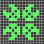
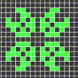

This is an SRT project in the field of Music Information Retrieval(MIR), aiming at transcribing audio to score.
Introduction
We aimed at transcribe audio input to score data and represent it by MIDI data or Sheet music.
在数字音乐时代，计算机模拟听觉成为人工智能的重要研究领域。作为音乐与计算机科学的交叉研究方向，利用计算机对数字音乐进行智能分析、进而计算模拟人类“乐感”，具有较高的学术价值和市场应用前景。 如今数字音乐已走入千家万户，并以惊人的速度增长。许多音乐爱好者在学习交流中需要音乐音频对应的曲谱，但没有曲谱时只能依靠较深的乐理知识基础从音频中听写出曲谱来（俗称“扒谱”）。因此集成了乐理知识的自动扒谱技术有着广泛的用户需求。此外，音乐智能分析技术在音乐的鉴别和搜索中也有重要应用。
数字音乐不同于一般的音频信号，采样数据量MB级的数字音频中有效的音乐信息其实只是kB级。原因在于它讲究音乐语言的逻辑性，可以用乐理知识分析。另外，人们在长期欣赏音乐、训练听力的过程中会形成乐感，这是人耳听辨音响的准确性和适应性的关键。构建统计学模型、利用机器学习的方法部分模拟出人的“乐感”，对计算机自动分析音乐帮助极大。
本项目旨在综合运用专家系统和机器学习的方法，对逻辑无序的音频采样数据进行更深层次的“数字化”，剥离出旋律、节奏等音乐元素，使之变为有规律的音乐语言，并用类似MIDI的格式存储或输出曲谱，便于音乐爱好者的学习交流。
Possibility Analysis
Since the advent of digital music, sound processing technology has been abundantly studied, leading to the development of various algorithms like STFT, wavlet analysis, cepstrum method, adaptive filtering, etc. In addition, digital music is well-organized audio, whose inherent properties may be determined by music theory in some way. Comprehensively combining music theoretical methods with statistics methods makes possible the simulation of human ears as sound processors. The state of the art allows query by humming and audio fingerprint generating, which along with other technologies, demonstrate the matured utilization of those methods.
Overview
- Qt Scoreur
- Audio Source Separation
supported by SVD - Onset &Pitch Detection
supported by CQT & SVM - Timbre Classification
supported by NN - Decision Making
aided by music theory - Automatic Composer
supported by HMM - Score Typesetting & Editing
interactive user interface
Links
- 科普: 音乐智能化
- Wikipedia: MIR
Music Information Retrieval - MIREX 2014
MIR Evaluation eXchange - My VexFlow
- LilyPond
- Chordify
- Pianoteq
物理参数模拟钢琴音色
About
We are 12 students from 2013 Yao Class (undergraduate division of the Interdisciplinary Institute for Informatioin Sciences, Tsinghua University). We share interests in music and coding. Together we go for the simple goal to make computer more intellegent to feel the musical bits, not just the cold bit stream but the colorful world behind.
Our work at the time may be preliminary, either implementing complicated algorithms proposed by others, or applying our limited knowledge of MIR to audio processing. But what we did during the past summer indeed laid a solid foundation for our further exploration.
Despite all kinds of difficulties, luckily we are still able to go through the whole process from audio input to score output. We are going to formulate our work within one or two weeks to give you a more clear view of what we have done.
Learn more...
Image Gallery
 



How We Got Scoreur
Simply combine score and french suffix -eur,
to distinguish from scorer.